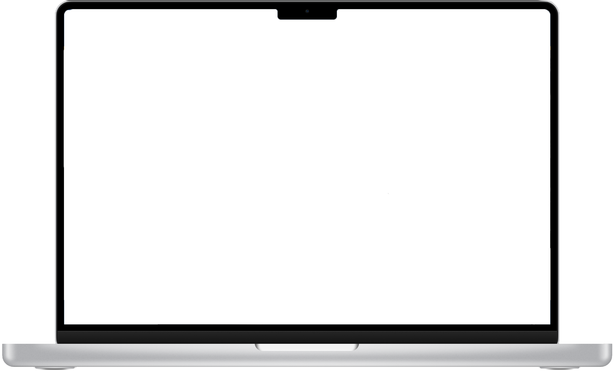
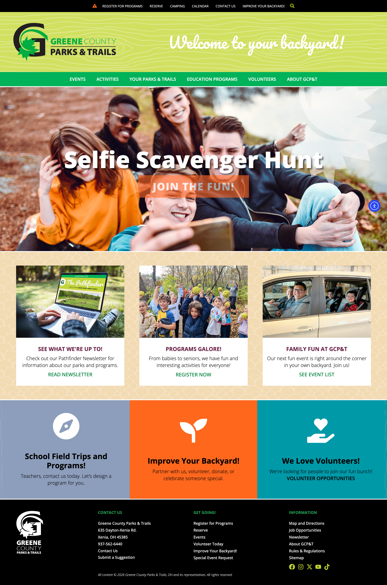
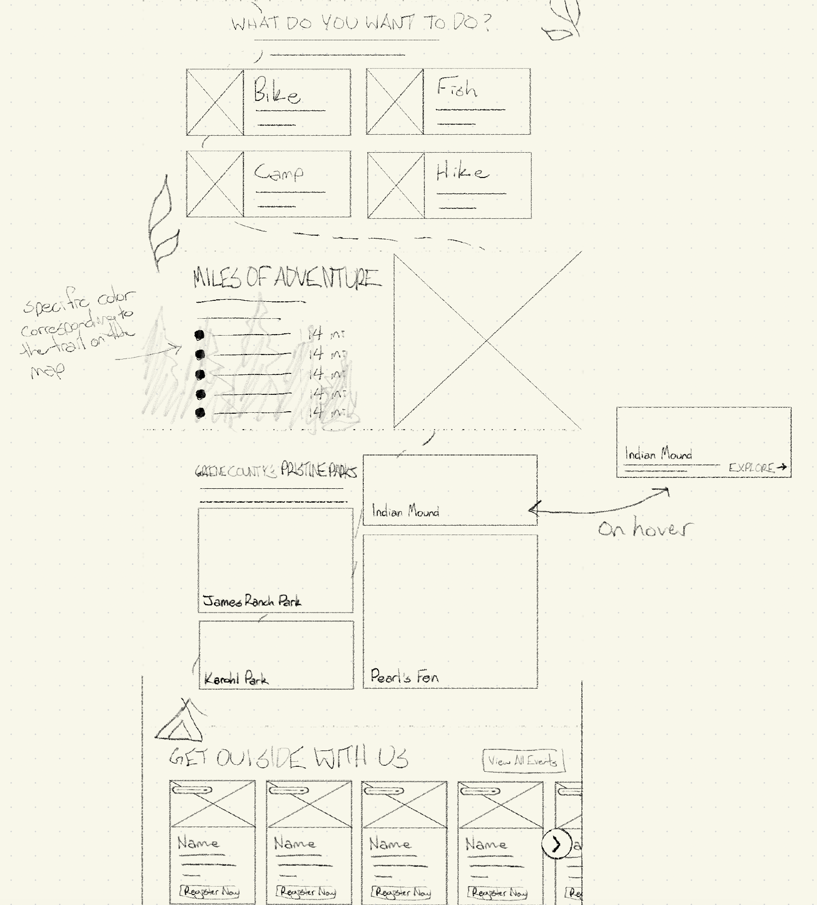
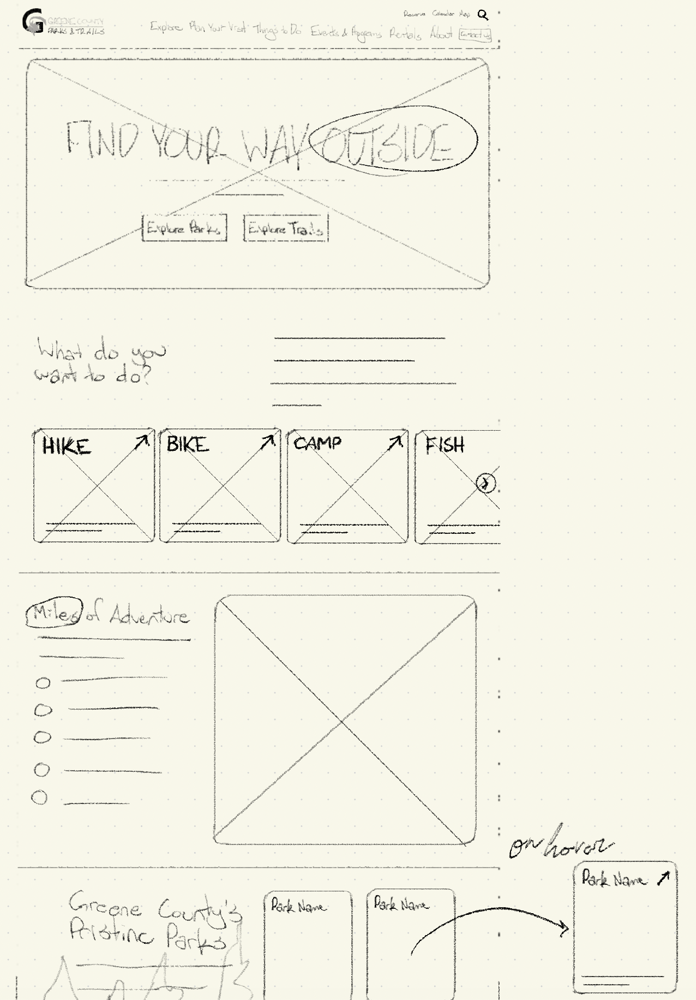

Greene County Parks & Trails
Project Overview
This one-month, purely exploratory project sought to redesign the Greene County Parks & Trails website, with the goal of highlighting community involvement and the parks and trails system Greene County offers.
Design Challenge
The primary challenge in this project was to highlight both the parks and trails and the community aspect of the system, while also giving the redesign an outdoorsy, natural feel.



Approach
When I started the project, I attended a mock specs meeting that allowed me to review the specs sheet and clarify stakeholder needs, which then helped inform my visual solution.
With these notes in mind, I began ideating and sketching on the homepage, receiving feedback from my professor before bringing the design into Figma to create a style guide and low fidelity prototypes. I then revised and refined the design through color, imagery, and typography that aimed to support the stakeholder needs.
After another round of feedback, I refined my prototype to high fidelity, and created a mobile and tablet version. With this finalized homepage, I created a flexible content page, that provided custom blocks that could be used for inner pages across the site.
Outcome
The final design included the main home page, and the responsive tablet and mobile versions that utilized best practices to keep the design usable at various screen sizes.
Additionally, I presented the final design in a mock client presentation, highlighting the changes I made and how those changes help them achieve their goal of increased community engagement and involvement.